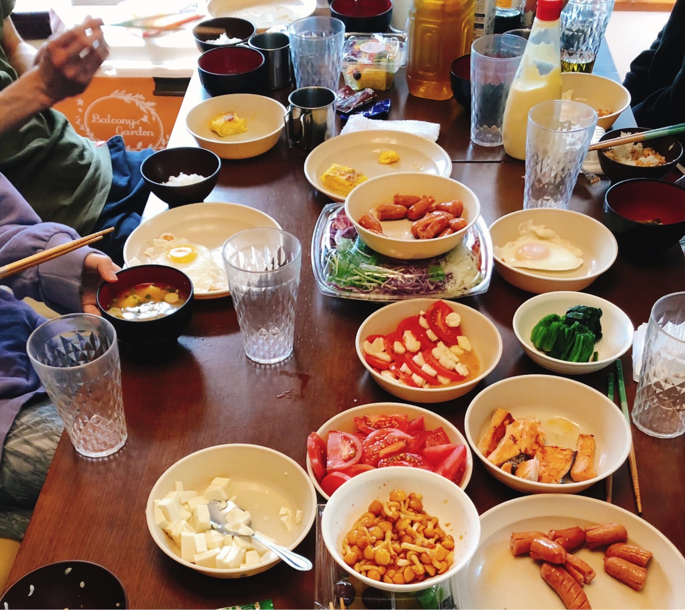
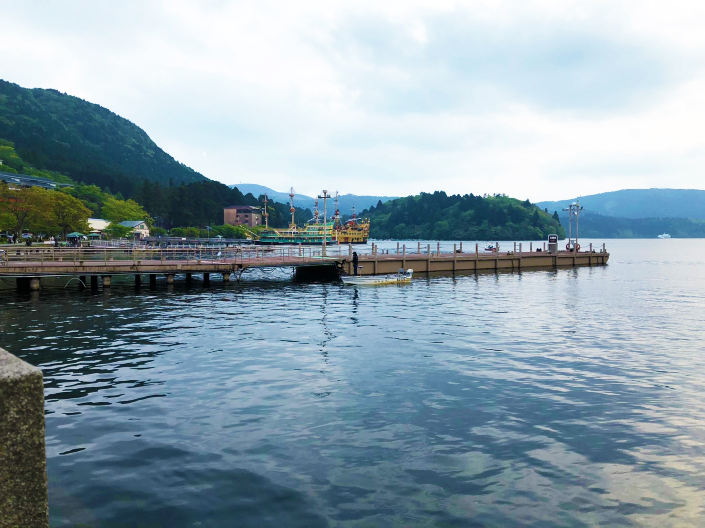

活 動 記 録
活 動 記 録
活動記録
ACTIVITY
2019.5.11-12にToKuメンバー10人で山中湖に旅行に行きました！
初日は山中湖の周りをサイクリングで一周しました。
天気が良くて富士山がとても綺麗でした！
夜はコテージでBBQをしました！
お肉が焼けるまでの間、6/1さんりくるっと企画のお試しも兼ねて
みんなで謎解きをしました！
夜何人かで散歩に行くと、星がとても綺麗でした！
二日目は、早く起きたメンバーが朝ごはんを用意してくれました！

お昼前にコテージを出て、白糸の滝に行きました！
ちょっとしたハプニングで、半分は山梨県河口湖周辺の白糸の滝に、
もう半分は静岡県富士宮の白糸の滝に行くことに。
その後、みんなで三島スカイウォークに行きました。
谷底からの高さが70mもある日本一長い吊り橋を渡りました！
夕方は箱根でご飯を食べました

ToKuらしい、自由で楽しい旅行でした！
（Y.N.）
続々更新中!
keep updating...